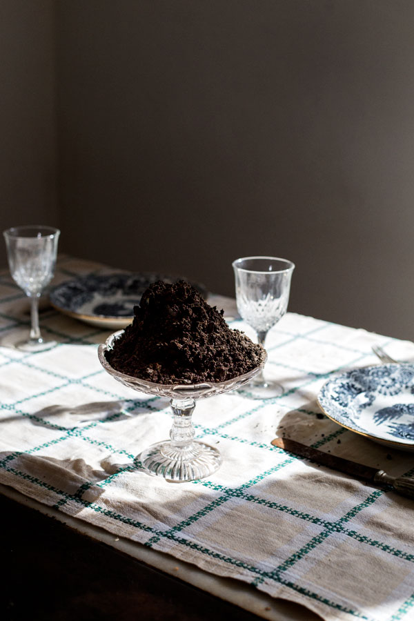

You dug up a Hungry Potato

© Ana Núñez Rodríguez
Strength
This potato is an absolute giver. Even when you have no specialized tools, it will feed you. Even if you don’t have much land to spare, it will feed you. I mean, even if you are as negligent as you are with your house plants, it will still feed you.
Weakness
Easily creates dependency. Especially when other harvests become expensive, people will cling to this potato as their lifesaver. Too much of one thing is never good, though. If this potato is ever affected by disease or pests, it gets worse than 2020. Famines, revolts, mass-scale exile, you name it.
Colombian grandma advice: "Nunca pongas todos los huevos en la misma canasta" (Never place all the eggs in the same basket).
This potato is an absolute giver. Even when you have no specialized tools, it will feed you. Even if you don’t have much land to spare, it will feed you. I mean, even if you are as negligent as you are with your house plants, it will still feed you.
Weakness
Easily creates dependency. Especially when other harvests become expensive, people will cling to this potato as their lifesaver. Too much of one thing is never good, though. If this potato is ever affected by disease or pests, it gets worse than 2020. Famines, revolts, mass-scale exile, you name it.
Colombian grandma advice: "Nunca pongas todos los huevos en la misma canasta" (Never place all the eggs in the same basket).
colophon
X
This game is part of Cooking Potato Stories—an exhibition of works by Ana Núñez Rodríguez at Foam Fotografiemuseum Amsterdam.
The exhibition is on display until 10 jul 2022, at Foam (Keizersgracht 609, Amsterdam).
Concept & Production: Valeria Posada Villada, Winke Wiegersma & Ana Núñez Rodríguez
Design & Development: Clara Pasteau
Special thanks to Henri Badaröh
© Ana Núñez Rodríguez | Foam Fotografiemuseum Amsterdam

The exhibition is on display until 10 jul 2022, at Foam (Keizersgracht 609, Amsterdam).
Concept & Production: Valeria Posada Villada, Winke Wiegersma & Ana Núñez Rodríguez
Design & Development: Clara Pasteau
Special thanks to Henri Badaröh
© Ana Núñez Rodríguez | Foam Fotografiemuseum Amsterdam
Image sources:
© Ana Núñez Rodríguez T. Houdijk (2006). Een aardappelschilmesje met een kunststof handvat [Digital Photograph]. Wikimedia Commons. JaBB (2006). Stamppot Boerenkool [Digital Photograph], Flickr. Anonymous (2006). Potesara [Digital Photograph], Wikimedia Commons. Harygit (n.d.). Electricity From Potato Battery on white background. Bio battery. 3D Render. [Digital Photograph], Shutterstock. Anonymous (1907-1930). Meisje dat bloemblaadjes determineert [Autochrome], Rijksmuseum. R.N. Salamano and W.G. Burton (1985). The History and Social Influence of the Potato [Photographic Prints]. Johan Braakensiek (1917). De hongeropstand in Amsterdam [Postcard], Rijksmuseum. John Clark Ridpath (1907) Image from page 336 of Ridpath's history of the world [Print], Flickr. Anonymous (Ca. 1917-1918). Potatoes in Iowa become 'the Newest Fighting Corps'' on the Domestic Front [Photographic Print]. US National Archives Catalog, Washington, D.C. Yann Cadarec (2015). Exposition rétrospective Elisabeth Louise Vigée Le Brun au Grand Palais à Paris, 23 September 2015 to 11 January 2016 [Photograph of a Painting]. Wikimedia Commons François Dumont (1812). Portrait of Antoine Parmentier [Photograph of a Painting]. Wikimedia Commons Lambertus Hendrik van Berk (Ca.1914). Tuin van het huis Kersbergen, Zeist, met onder andere zonnebloemen [Autochrome], Rijksmuseum. /a> Lambertus Hendrik van Berk (Ca.1914). Bertha Josina Jeanetta Johanna van Berk [Autochrome], Rijksmuseum. Julie Weatherbee (2010). Bob's Mashed Potato, [Digital Photograph], Flickr. Felicia Day (2010). Potatoes, [Digital Photograph], Flickr. Su-Lin (2010). Roasted Potato Wedges, [Digital Photograph], Flickr. Anonymous (n.d). Cooked Potatoes with Parsely [Digital Photograph], Pixabay. Percie Benzie Abery (Ca.1940) Odd shaped potatoes (1294743) [Photographic Print], National Library of Wales via Wikimedia Commons. Anonymous (ca.1880) Soluble Pacific Guano [Printed Advertisement]. 99 Percent Invisible. Actep Burstov (n.d.) Archive image from page 62 of Descriptive catalogue of high grade. Descriptive catalogue of high grade seeds fruit trees nursery stock and flowers [Digital Photograph], Alamy Stock Photo.
Text sources:
Ana Núñez Rodríguez (2020), Cooking Potato Stories, [E-publication], KABK. Hawkes, J.G & Francisco-Ortega, J. (1993). The Early History of the Potato in Europe. Euphytica (70), 1-7. Nunn, N & Qian, N (2011) The potato’s contribution to population and urbanization: Evidence from a Historial Experiment. Quarterly Journal of Economics (126), 593-650. Berkely University of California (n.d). Monoculture and the Irish Potato Famine: Cases of missing genetic variation. Mann, C (November 2011). How the Potato Changed the World. Smithsonian Magazine Online Ponce, N. C. (2014). Tubérculos andinos: conservación y uso desde una perspectiva agroecológica. Bogotá: Pontificia Universidad Javeriana.
© Ana Núñez Rodríguez T. Houdijk (2006). Een aardappelschilmesje met een kunststof handvat [Digital Photograph]. Wikimedia Commons. JaBB (2006). Stamppot Boerenkool [Digital Photograph], Flickr. Anonymous (2006). Potesara [Digital Photograph], Wikimedia Commons. Harygit (n.d.). Electricity From Potato Battery on white background. Bio battery. 3D Render. [Digital Photograph], Shutterstock. Anonymous (1907-1930). Meisje dat bloemblaadjes determineert [Autochrome], Rijksmuseum. R.N. Salamano and W.G. Burton (1985). The History and Social Influence of the Potato [Photographic Prints]. Johan Braakensiek (1917). De hongeropstand in Amsterdam [Postcard], Rijksmuseum. John Clark Ridpath (1907) Image from page 336 of Ridpath's history of the world [Print], Flickr. Anonymous (Ca. 1917-1918). Potatoes in Iowa become 'the Newest Fighting Corps'' on the Domestic Front [Photographic Print]. US National Archives Catalog, Washington, D.C. Yann Cadarec (2015). Exposition rétrospective Elisabeth Louise Vigée Le Brun au Grand Palais à Paris, 23 September 2015 to 11 January 2016 [Photograph of a Painting]. Wikimedia Commons François Dumont (1812). Portrait of Antoine Parmentier [Photograph of a Painting]. Wikimedia Commons Lambertus Hendrik van Berk (Ca.1914). Tuin van het huis Kersbergen, Zeist, met onder andere zonnebloemen [Autochrome], Rijksmuseum. /a> Lambertus Hendrik van Berk (Ca.1914). Bertha Josina Jeanetta Johanna van Berk [Autochrome], Rijksmuseum. Julie Weatherbee (2010). Bob's Mashed Potato, [Digital Photograph], Flickr. Felicia Day (2010). Potatoes, [Digital Photograph], Flickr. Su-Lin (2010). Roasted Potato Wedges, [Digital Photograph], Flickr. Anonymous (n.d). Cooked Potatoes with Parsely [Digital Photograph], Pixabay. Percie Benzie Abery (Ca.1940) Odd shaped potatoes (1294743) [Photographic Print], National Library of Wales via Wikimedia Commons. Anonymous (ca.1880) Soluble Pacific Guano [Printed Advertisement]. 99 Percent Invisible. Actep Burstov (n.d.) Archive image from page 62 of Descriptive catalogue of high grade. Descriptive catalogue of high grade seeds fruit trees nursery stock and flowers [Digital Photograph], Alamy Stock Photo.
Text sources:
Ana Núñez Rodríguez (2020), Cooking Potato Stories, [E-publication], KABK. Hawkes, J.G & Francisco-Ortega, J. (1993). The Early History of the Potato in Europe. Euphytica (70), 1-7. Nunn, N & Qian, N (2011) The potato’s contribution to population and urbanization: Evidence from a Historial Experiment. Quarterly Journal of Economics (126), 593-650. Berkely University of California (n.d). Monoculture and the Irish Potato Famine: Cases of missing genetic variation. Mann, C (November 2011). How the Potato Changed the World. Smithsonian Magazine Online Ponce, N. C. (2014). Tubérculos andinos: conservación y uso desde una perspectiva agroecológica. Bogotá: Pontificia Universidad Javeriana.